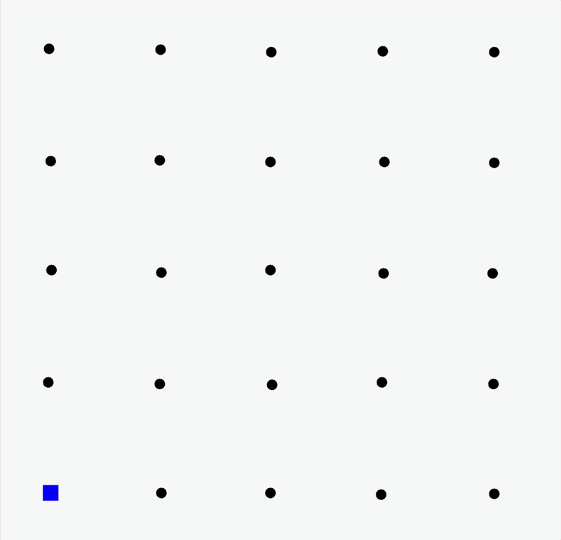

Flexible Distributed Particle Filtering for the Internet of Things via Aggregate Computing
Angela Cortecchia, Davide Domini, Giovanni Ciatto, Roberto Casadei, Danilo Pianini, and Mirko Viroli
Department of Computer Science and Engineering (DISI)
Alma Mater Studiorum – University of Bologna - Cesena, Italy

Motivation
Many cyber-physical systems must estimate a hidden dynamical state from distributed, noisy observations.
No single device directly observes the full state.

Tracking intuition: sensors observe fragments of evidence; the system reconstructs the target trajectory.
From Observations to a Posterior Estimate
Reconstruct a latent state over time from partial and noisy observations.
Classical linear estimators are not enough when dynamics are non-linear and uncertainty is non-Gaussian.

Particle Filters
A particle filter represents belief with a cloud of weighted hypotheses.
Each particle is one possible state.
Each weight says how plausible it is.
Likely particles survive; unlikely particles fade out.

The estimate is a distribution, not only a point.
Particle Filter Over Time


Distributed Particle Filters
In IoT systems, observations are naturally collected by many spatially distributed devices.
Centralized PF
All observations are assumed to be available to one estimator.
Simple, but unrealistic for open IoT deployments.
Distributed PF
Each device observes only local information.
The goal is to approximate the same global belief through local cooperation.
DPF: many coordination choices
DPF algorithms differ mainly in how they move, combine, and exploit information across the network.
Particle Filters
Particle Filters
Particle Filters
Particle Filters
Particle Filters
Particle Filters
What Makes DPF Hard?
Communication constraints
Bandwidth, latency, energy, and robustness make centralized collection unrealistic.
Networks change
Delays, topology changes, asynchrony, and failures affect estimation.
Trade-offs
Accuracy, overhead, complexity, and robustness must be balanced.
Aggregate Computing
A macroprogramming approach to coordination

Aggregate Computing lets developers describe the behaviour of a collective system, rather than programming each device separately.
The program manipulates computational fields: distributed values evolving across the network.
AC Computational Model
From collective program to local execution
One program, many local executions
Collective specification. The programmer writes the behaviour of the whole device network.
Local rounds. Each device evaluates the same program using local sensors, memory, and neighbour messages.
Emergent field. The collection of local values forms the global computational field.
Round-based model
Key Idea: DPF as a Field Computation
The goal is not to introduce yet another DPF algorithm.
Filtering logic
This remains standard.
Coordination choices
These become programmable.
Contribution 1:
Aggregate measurement function
Each node keeps its own local particle filter.
Instead of exchanging particle sets, neighbors share raw observations; local likelihoods are combined during the weighting step.
Nearby sensors collectively behave like a distributed sensor.
Contribution 2:
Self-Healing Fusion Center
Leader-based fusion as a field-level behavior
Election. A leader is selected dynamically.
Fusion. The leader behaves as the current fusion center.
Failure. If the leader disappears, the role is reassigned.
Self-healing. A new leader resumes the behavior.
Configuration lets us move along the spectrum between centralized simplicity and decentralized robustness.
Experimental Evaluation
Scenario
Each sensor observes the target through a radio-like signal: closer targets produce stronger, cleaner evidence; farther targets produce weaker and noisier evidence.
Not all sensors are equally informative at every time step.
Evaluated configurations
each sensor has its own PF; only measurements are shared.
measurements converge to a leader; failure is injected at time step 1500.

Experiment 1: AGGREGATE MEASUREMENT FUNCTION
Each sensor keeps its own local particle filter. No particles are exchanged.
Small neighborhood → weak evidence → high error
Larger neighborhood → aggregated evidence → better tracking

Experiment 1 results: RMSE

- RMSE measures the distance between the estimated target position and the real one.
- With few neighbors, the error remains high.
- Increasing $|\mathcal{N}|$ reduces RMSE and improves long-term stability.
- The benefit comes from sharing measurements, not particle sets.
Experiment 2: Self-Healing Fusion
An elected leader plays the fusion-center role. At time step 1500, the leader fails.
Transient during initial leader election
Convergence to a valid estimation
Transient after leader failure
Resumed tracking after re-election
Fusion-center behavior can be retained without a permanently fixed center.

Takeaways and Future Work
Takeaways
DPF as field computation. Filtering stays standard; coordination becomes programmable.
Flexible architectures. Fusion, dissemination, and active regions become configurable choices.
Local likelihood aggregation works. Sharing observations improves tracking without exchanging particle sets.
Fusion can self-heal. Leader election preserves fusion-center behaviour after failures.
Future work
Explore more AC design dimensions
Broader coordination strategies for propagation and fusion; activation only in relevant regions.
Extend the scenarios
Multiple moving targets, flocking-inspired coordination, heterogeneous sensing, and richer deployment conditions.